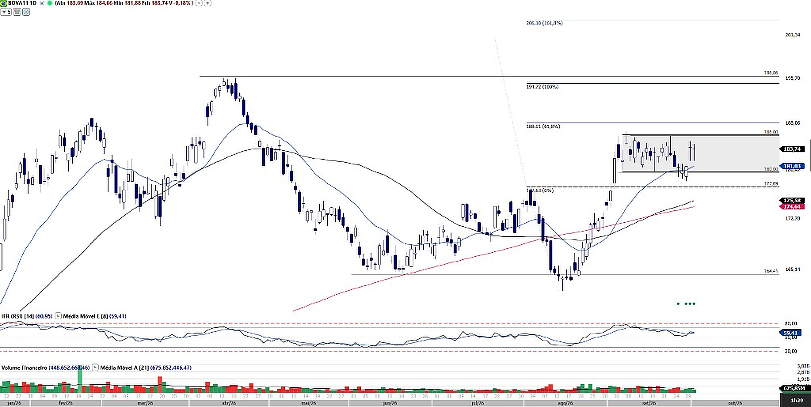
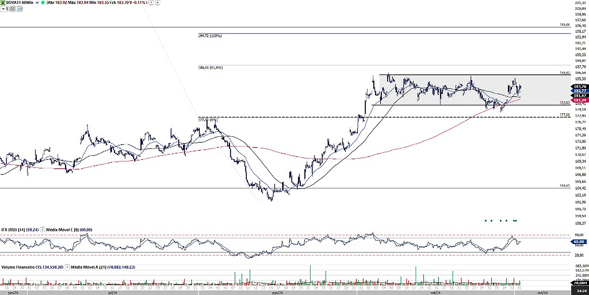

Research · Análise Técnica · 01/10/2026
Trend Insights · Estatísticas Pós-Eleição
Ibovespa do último pregão antes da votação ao primeiro pregão depois · turnos 2002–2022
- Nos primeiros turnos, o Ibovespa subiu em cinco de seis eleições; exceção 2002.
- Nos segundos turnos, caiu em quatro de seis eventos.
- Partir da abertura de sexta elevou as médias em cerca de 1 p.p., sem mudar o nº de altas.
- Amostra pequena (6 por turno): descreve o passado — não indica probabilidade futura.
Lucas Costa, CMT · Gabriela Sporch · BTG Pactual Research
Operações
Abra o factsheet para o payoff interativo; o DIE oficial fica no link de cada card.
-
Call Spread BOVA11 · 105/115 BOVA11
Compra call 105% + venda 115% · preço 3,3% · teto líquido +6,7% · fixing 11/11/2026.
Abrir material →DIE DIE-16297762 ↗ -
Call KO c/ Rebate BOVA11 · 106% BOVA11
Call up&out 106% · preço 3,0% · rebate 3,5% (líq. +0,5%) · fixing 08/10/2026.
Abrir material →DIE DIE-16324790 ↗
Análise Técnica · BOVA11 · 01.10.2026
BTG Pactual Research | Technical Analysis — Lucas Costa, CMT · Gabriela Sporch
Gráfico diário

BOVA11 mantém tendência de alta no médio prazo, após a reversão em V formada a partir da falha de rompimento do fundo de ago-26, na região dos 164,41. No curto prazo, o ETF entrou em uma fase de lateralidade entre 180,00 e 186,00, mostrando acomodação após a forte recuperação. Enquanto a base do range permanecer preservada, a consolidação se aproxima mais de uma pausa na tendência do que de uma reversão.
As médias de 21 e 50 dias apresentam cruzamento de alta e podem atuar como suportes em 181,02 e 175,58. A média de 200 dias permanece abaixo do preço, em 174,64, reforçando a estrutura positiva de médio prazo.
O rompimento dos 186,00 seria a saída do range pelo topo, com próximas resistências nas projeções de Fibonacci da reversão em V em 188,01 (61,8%) e 194,72 (100%). Acima, o topo de abr-26 em 196,06 é resistência estrutural importante. Do lado dos suportes, 180,00 é a principal referência de curto prazo; a perda dos 177,63 representaria deterioração mais relevante.
- 180,00 — base da lateralidade
- 177,63 — suporte abaixo do range
- 175,58 — MM 50 dias
- 174,64 — MM 200 dias
- 186,00 — topo da lateralidade
- 188,01 — Fib 61,8%
- 194,72 — Fib 100%
- 196,06 — topo abr-26
Gráfico 60 minutos

No 60 minutos, as médias de 21 e 50 períodos cruzam para cima e passam por 182,76 e 181,67, com o preço sustentado acima das duas. Outro ponto positivo foi a falha de rompimento da base da lateralidade em 180,00 no final de set-26: o preço voltou rápido para dentro do range, elevando a atenção para o extremo oposto em 186,00.
Fundos mais altos após a falha, maior fluxo nas altas e sustentação acima das médias de curto prazo aumentam a chance de novo teste do topo. A superação dos 186,00 seria especialmente relevante — saída de consolidação de várias semanas e possível abertura de volatilidade, com projeções em 188,01 e 194,72. Enquanto 180,00–181,67 se preservarem, o viés de curto prazo segue direcionado para a parte superior do range.
- 182,76 — MM 21 períodos
- 181,67 — MM 50 períodos
- 180,00 — base + falha recente
- 177,69 — suporte abaixo da consolidação
- 186,00 — topo · principal gatilho
- 188,01 — Fib 61,8%
- 194,72 — Fib 100%
- 196,06 — topo abr-26